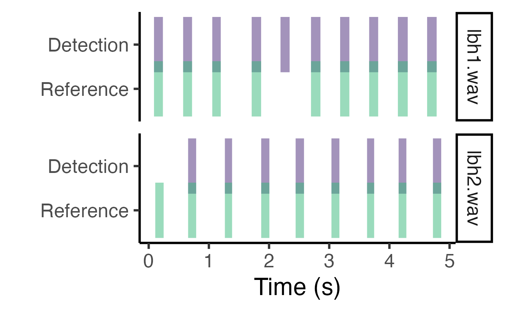

plot_detection evaluates the performance of a sound event detection procedure comparing the output selection table to a reference selection table
Usage
plot_detection(reference, detection, mid.point = FALSE, size = 20, positions = c(1, 2))Arguments
- reference
Data frame or 'selection.table' (following the warbleR package format) with the reference selections (start and end of the sound events) that will be used to evaluate the performance of the detection, represented by those selections in 'detection'. Must contained at least the following columns: "sound.files", "selec", "start" and "end". It must contain the reference selections that will be used for detection optimization.
- detection
Data frame or 'selection.table' with the detections (start and end of the sound events) that will be compared against the 'reference' selections. Must contained at least the following columns: "sound.files", "selec", "start" and "end". It can contain data for additional sound files not found in 'references'. In this case the routine assumes that no sound events are found in those files, so detection from those files are all false positives.
- mid.point
Logical argument to control if each annotations is shown as a rectangle with fix width center at the mid point of the time position (if
TRUE) or the true time range of the annotations is used (ifFALSE, default). 'mid.point' can be useful to make visible annotations in very long sound files that would otherwise look to thin.- size
Numeric. Controls the size of the rectangles if
mid.point = TRUE. Default is 20.- positions
Numeric. Controls the vertical position of the rectangles representing anotations. Default is c(1, 2). This can be used to get reference and detection annotations closer in the vertical axis. Note that the height of rectangles is 0.5.
Details
The function helps to visualize the match between reference and detection annotations by plotting them next to each other as rectangles along the time axis. If the annotations contain data for several sound files each sound file will be plotted in its own panel. The plot can be further modify by users using regular ggplot syntax.
References
Araya-Salas, M., Smith-Vidaurre, G., Chaverri, G., Brenes, J. C., Chirino, F., Elizondo-Calvo, J., & Rico-Guevara, A. 2022. ohun: an R package for diagnosing and optimizing automatic sound event detection. BioRxiv, 2022.12.13.520253. https://doi.org/10.1101/2022.12.13.520253
Author
Marcelo Araya-Salas marcelo.araya@ucr.ac.cr)
Examples
{
# load data
data("lbh_reference")
# mid point and regular size
plot_detection(
reference = lbh_reference[-14, ],
detection = lbh_reference[-1, ], mid.point = TRUE
)
# mid point and larger size
plot_detection(
reference = lbh_reference[-14, ],
detection = lbh_reference[-1, ], mid.point = TRUE, size = 25
)
# true time rectangles
plot_detection(
reference = lbh_reference[-14, ],
detection = lbh_reference[-1, ]
)
# use position to make reference and anotations overlap vertically
plot_detection(
reference = lbh_reference[-14, ],
detection = lbh_reference[-1, ], positions = c(1, 1.4)
)
# modified using ggplot
gg_pd <- plot_detection(
reference = lbh_reference[-14, ],
detection = lbh_reference[-1, ], positions = c(1, 1.4)
)
gg_pd + ggplot2::theme_classic(base_size = 25)
}
